Windows系统安装不求人
时至今日，Windows系统越来越现代化，连安装方式也简单很多。
使用微软官方的安装程序，几乎可以像安装软件一样安装系统。
本文推荐几种重装系统方式，大家可以按照教程说明操作。
注意:安装系统需要一定电脑基础，在开始前请务必备份数据资料，安装系统的数据丢失损坏风险由用户自行承担。
1、官方安装程序
Windows 10发布后，为了方便大家快速从旧版本迁移，微软推出了Windows 10安装程序。
任何人都可以免费在Windows 10官网下载该程序：
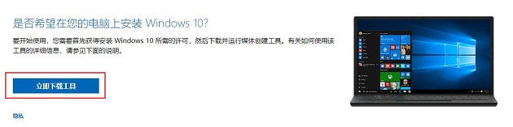
下载后打开，它会自动从微软服务器获取官方原版ISO镜像，省得再到处找镜像，而且没有安全风险。
用户可以直接使用该工具为当前电脑升级，也可以将镜像保存到电脑本地，或者直接做成U盘安装介质。
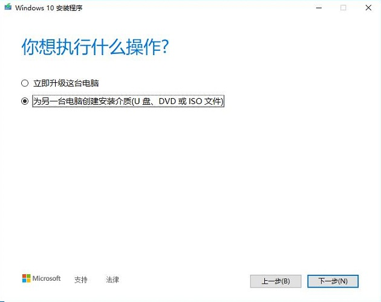
如果选择制作U盘安装介质，需要先插入一个容量大于等于8GB的U盘。工具会清除U盘中所有数据，并将下载的系统写入U盘中。
此时U盘已经不再是存储设备，而是安装介质。
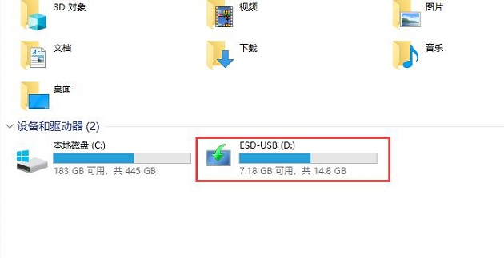
使用该U盘可以给任何电脑无数次重装Windows 10系统。
只需要将U盘插入需要重装的电脑，然后开机进入BIOS选择从该U盘启动，之后系统会引导你完成Windows 10系统的安装。
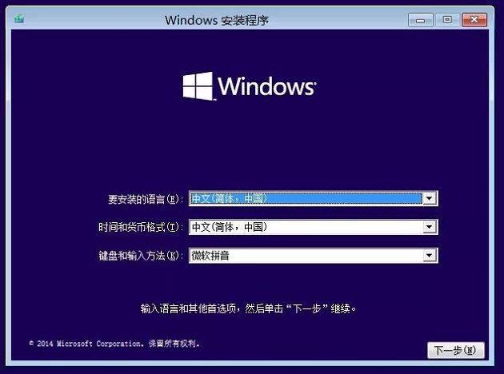
2、直接装
Windows 10开始，镜像可以直接使用，就和装软件似的。
下面的操作建议断网进行，不然检查更新可能需要很多时间。
先将镜像文件放在C盘以外的磁盘中。
右键镜像 - 装载。
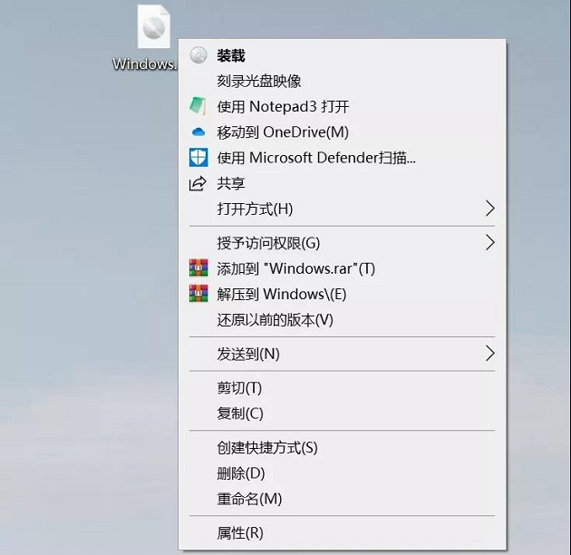
然后在此电脑中，会出现一个新的DVD驱动器，右键 - 以管理员身份运行setup.exe。
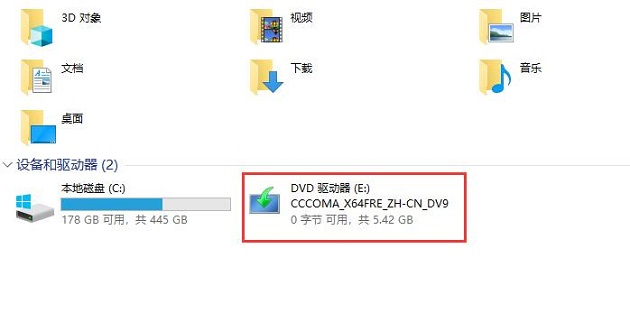
然后Windows 10安装程序会让你选择一些安装事项，例如是否保留资料和设置等。
之后电脑会重启进入正常的Windows 10安装界面。
3、镜像+软碟通
如果你的电脑已经无法开机，或者需要给其他电脑安装系统，上面的两个方法就不好使了。
此时可以选择先将系统写入到U盘中，然后通过U盘来安装系统，U盘容量需要在8GB及以上。
然后还需要下载写入软件「软碟通」。
安装软碟通后打开软件，点击文件 - 打开，选择你下载的镜像。
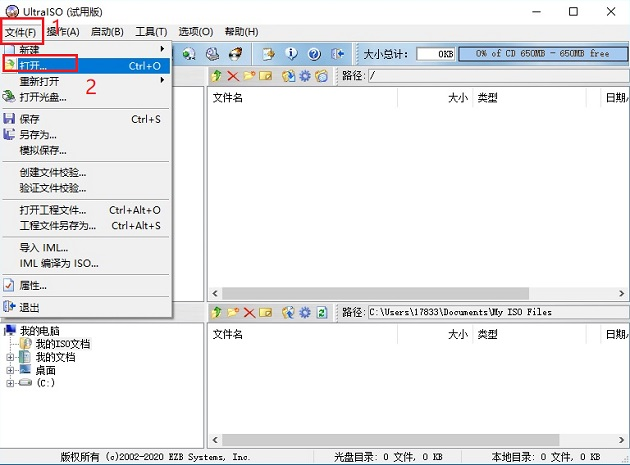
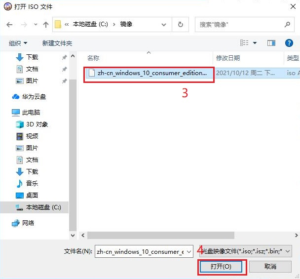
点击启动 - 写入硬盘映像。
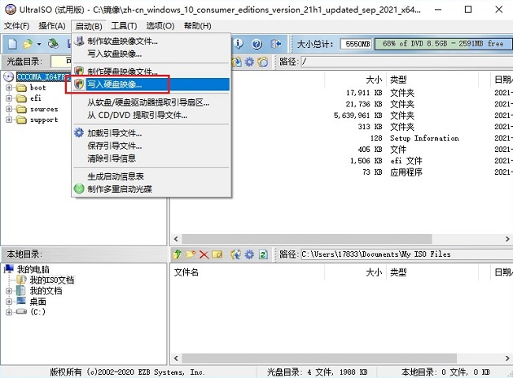
选择做启动盘的U盘写入。(该操作会清除U盘中所有数据)
之后的操作与以上无差。
4、PE工具箱
简单来说PE就是一个轻量级的Windows系统，提供Windows的操作界面。
将PE写入U盘后，再从U盘启动，电脑会加载U盘中的PE系统。
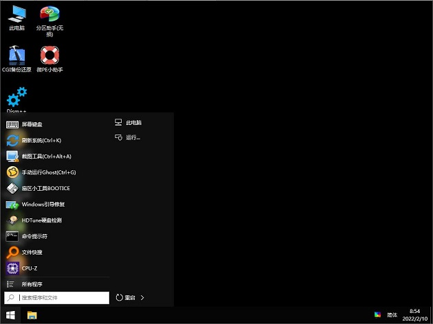
因为是一个系统，所以功能非常强大，你可以在PE中修复、调整原系统，为磁盘杀毒等。
最重要的是可以直接使用PE中的工具，安装ISO系统镜像。
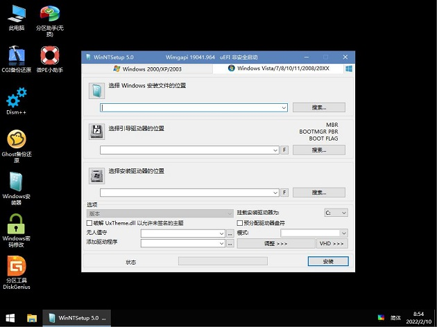
只要U盘容量够大，你可以将各种系统镜像都放到U盘中。
然后使用PE中的工具，安装你想要的系统版本，避免了反复写入U盘的麻烦。
所以PE工具箱在电脑城使用率非常高。
然而PE的全面性，也带来了一些麻烦。
网络上有很多流氓PE工具，它们会在安装系统后，植入推广软件，锁定主页，甚至植入挖矿木马等。
5、题外话
为什么以前非常流行的Ghost装系统，现在销声匿迹了？
其实Ghost的工作相当于备份和还原系统，但现在装系统越来越简单，大家也就不愿再做Ghost专用的系统文件。
目前网络上下载的Ghost镜像，大多是植入了流氓软件，私货太多，非常不推荐大家使用。
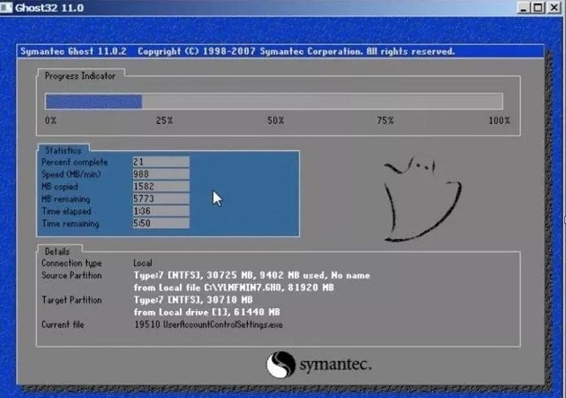
系统安装完成后就是激活问题了，如果你的电脑是品牌机，通常已经拥有正版系统，安装对应系统版本(一般是家庭版)后就会自动激活。
如果没有自动激活，也可以去官网购买正版激活码，或者使用一些激活工具，这里不深入讨论。